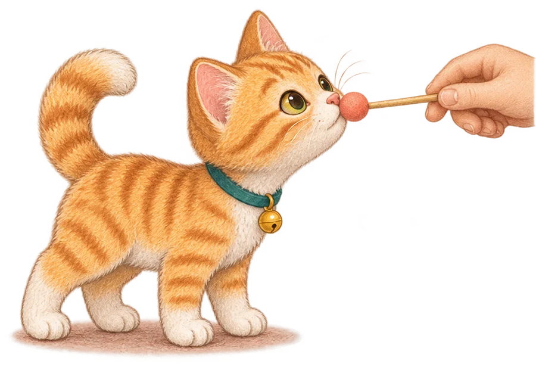
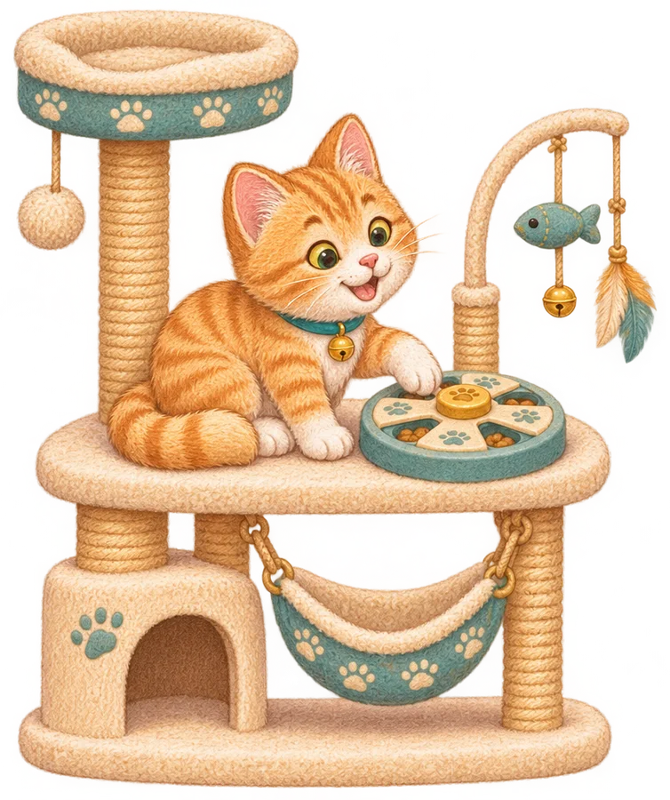
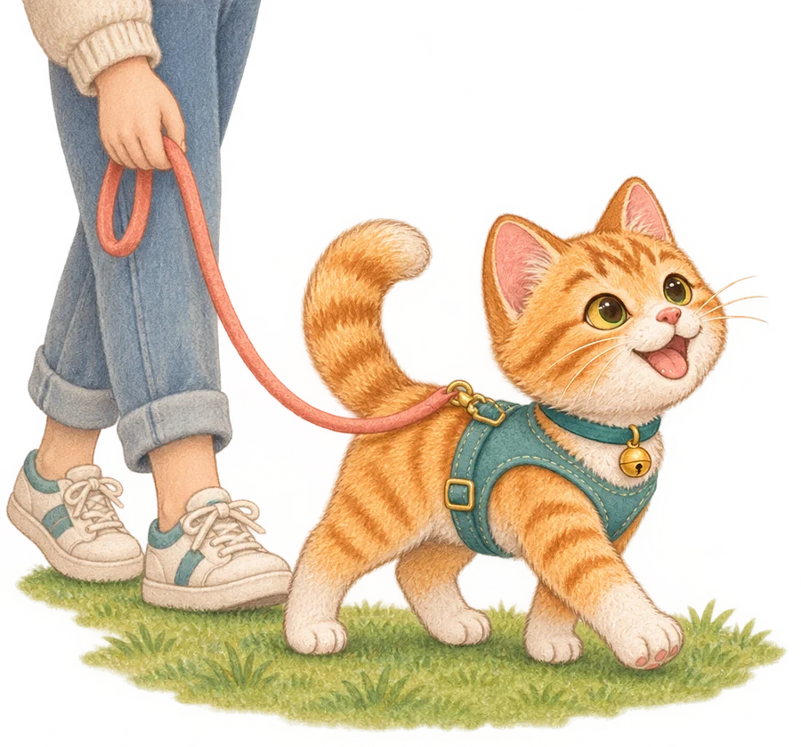
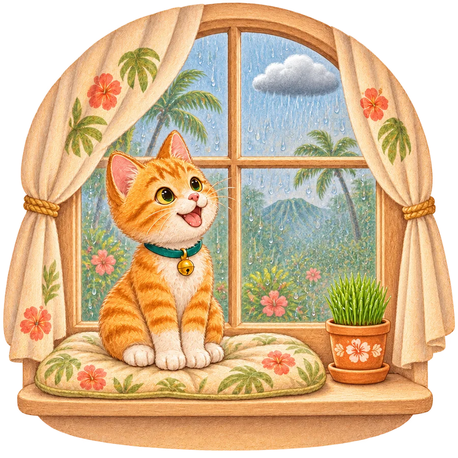
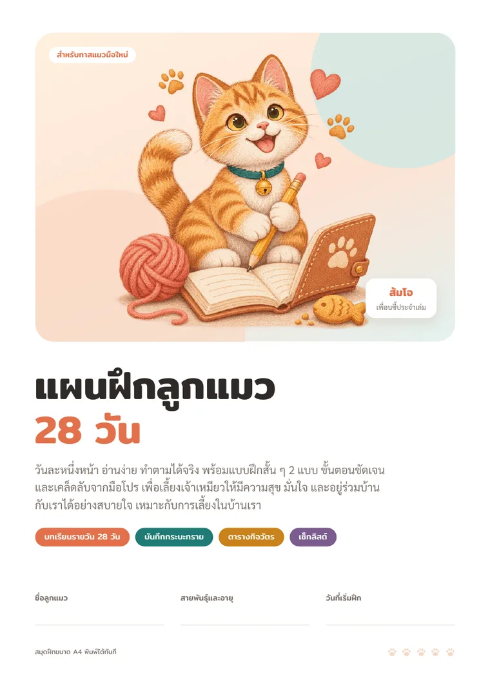
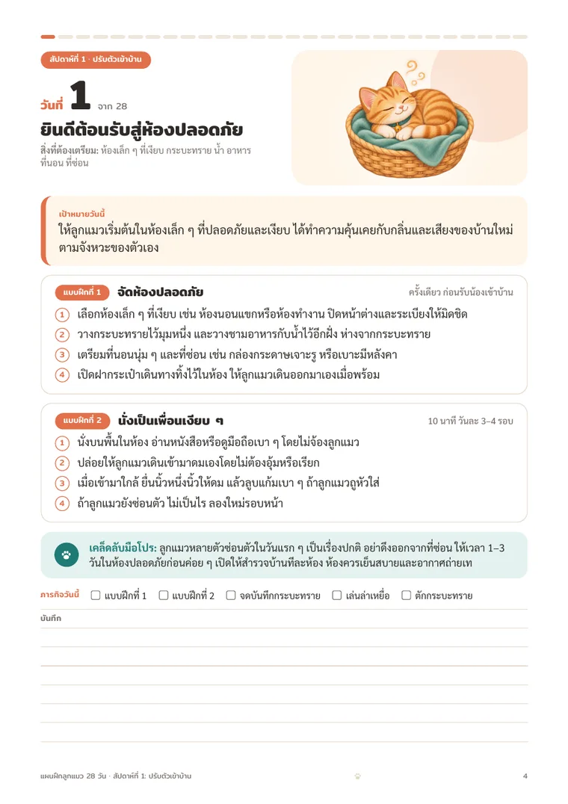
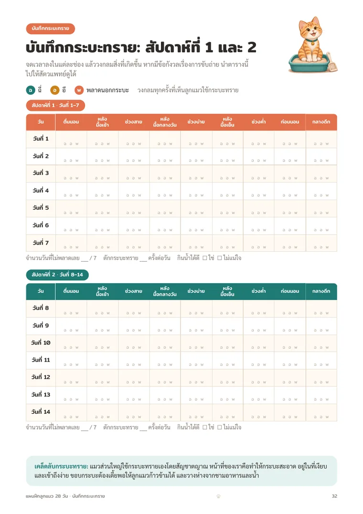
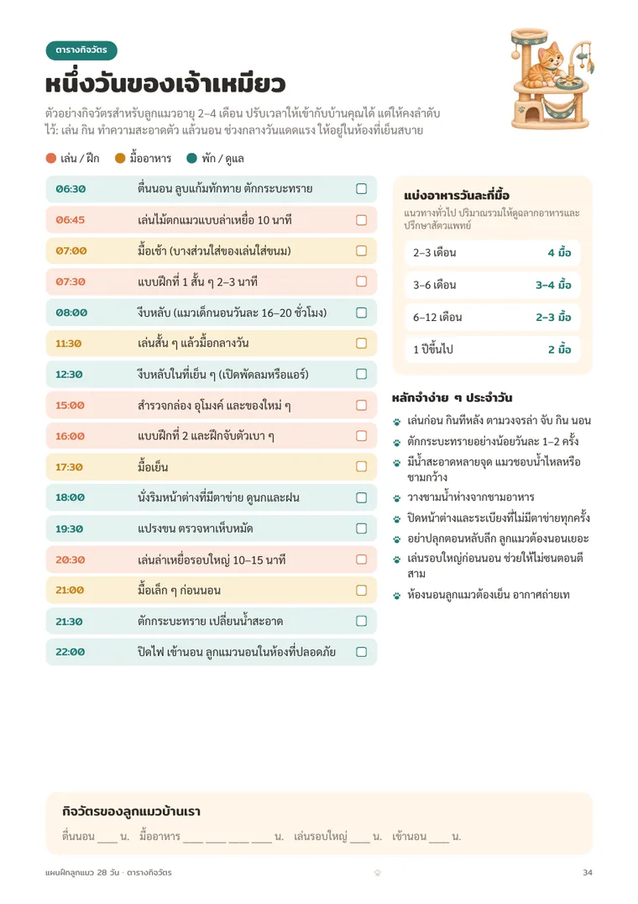
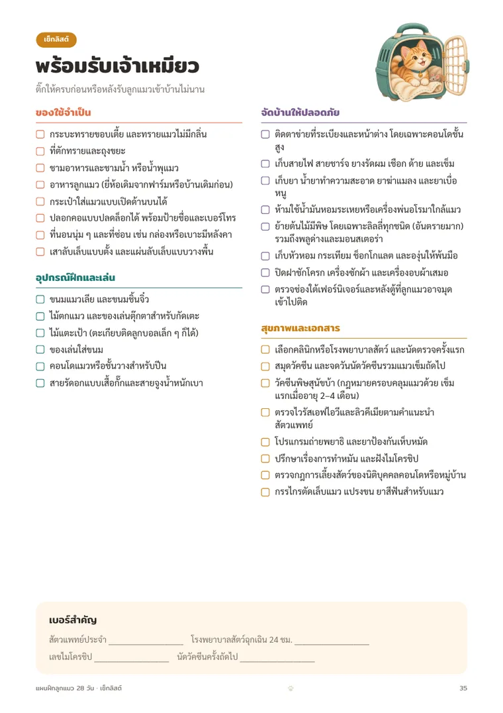
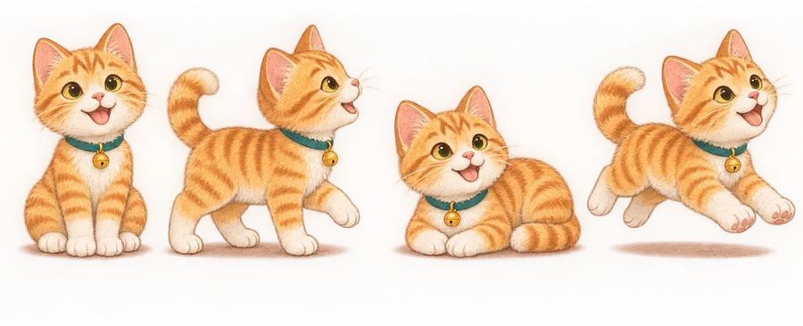

บทเรียน 28 วัน
วันละหน้า มีเป้าหมาย แบบฝึก 2 แบบพร้อมขั้นตอน 1–2–3–4 และเคล็ดลับ ฝึกครั้งละสั้น ๆ แบบที่แมวชอบ
ใครว่าแมวฝึกไม่ได้? วันละหนึ่งหน้า แบบฝึกสั้น ๆ ครั้งละไม่กี่นาที ช่วยให้เจ้าเหมียวใช้กระบะทรายเป็นที่ ลับเล็บที่เสาแทนโซฟา เดินเข้ากระเป๋าเอง ยอมให้ตัดเล็บ และไม่กัดมือ ออกแบบมาสำหรับคอนโด อากาศร้อน และหน้าฝนแบบบ้านเรา


วันละหน้า มีเป้าหมาย แบบฝึก 2 แบบพร้อมขั้นตอน 1–2–3–4 และเคล็ดลับ ฝึกครั้งละสั้น ๆ แบบที่แมวชอบ
จดฉี่ อึ และการพลาดนอกกระบะ ช่วยให้เห็นสัญญาณผิดปกติเรื่องสุขภาพได้เร็ว

ตัวอย่างหนึ่งวันของลูกแมว 2–4 เดือน เล่น กิน นอน ตามธรรมชาติ พร้อมตารางจำนวนมื้อตามอายุ
ของใช้จำเป็น จัดบ้านให้ปลอดภัยสำหรับแมว วัคซีน การเข้าสังคม และตารางติดตาม 14 ทักษะ
ฉลองวันที่ 28 ด้วยใบประกาศ “น้องแมวแสนดี” ให้กรอกชื่อและถ่ายรูปเก็บไว้เป็นที่ระลึก

สัปดาห์ที่ 4





กดปุ่มเดียว ได้ไฟล์ PDF ทันที ไม่ต้องสมัครสมาชิก
พิมพ์บนกระดาษ A4 ทั้งเล่ม หรือเฉพาะบันทึกกระบะทรายมาติดตู้เย็น
ครั้งละ 1–3 นาที วันละหลายรอบ แล้วติ๊กภารกิจของวันนั้น
ส้มโอเป็นลูกแมวส้มลายสลิด อก หน้า และถุงเท้าสีขาว ใส่ปลอกคอสีเขียวกับกระดิ่งทองที่ดังกรุ๊งกริ๊งทุกครั้งที่วิ่งมาหา ชอบขนมเลียที่สุดในโลก ส้มโอจะแสดงให้ดูทุกท่า ตั้งแต่ใช้กระบะทราย ลับเล็บ ไฮไฟว์ ไปจนถึงวันรับปริญญา
ส้มโอขอฝากบอก: ข้าวตังเห่าเสียงดังมาก เมี้ยวก็พอแล้ว 😾

ส้มโอจะทำเป็นไม่เห็นก็ได้ ข้าวตังก็มีสมุดฝึก 28 วันของตัวเอง ตั้งแต่ขับถ่ายเป็นที่ นอนในกรง ยันเดินสายจูง ฟรีเหมือนกันเป๊ะ
ยอมรับก็ได้ ไปหาข้าวตัง 🐶 ไม่มีทาง แมวคือที่หนึ่ง 😼ได้จริง แมวเรียนรู้ผ่านรางวัลได้ดีมาก แค่ต้องฝึกสั้นกว่าสุนัข ครั้งละ 1–3 นาที ใช้ขนมที่ชอบมาก ๆ อย่างขนมเลีย และให้แมวเป็นฝ่ายเลือกเสมอ ไม่บังคับ
ฟรีจริงทั้งเล่ม ไม่ต้องสมัคร ไม่ต้องกรอกอีเมล กดดาวน์โหลดแล้วได้ไฟล์ทันที แชร์ให้เพื่อนที่เพิ่งรับน้องแมวได้ด้วย
ออกแบบมาสำหรับลูกแมวสุขภาพดีอายุประมาณ 8–12 สัปดาห์ขึ้นไป แมวโตก็ใช้บทเรียนส่วนใหญ่ได้ แค่ใช้เวลานานขึ้นเล็กน้อย
เหมาะมาก ในเล่มเน้นการเลี้ยงในบ้าน การติดตาข่ายระเบียง การจัดห้องปลอดภัย การป้องกันวิ่งหลุดทางประตู และการให้แมวมีที่ปีนป่ายในพื้นที่จำกัด
ไม่ได้ เล่มนี้เป็นคำแนะนำการฝึกทั่วไป เรื่องวัคซีน การทำหมัน ยาป้องกันพยาธิ และสุขภาพ ควรปรึกษาสัตวแพทย์เสมอ หากน้องมีปัญหาการขับถ่ายหรือพฤติกรรมก้าวร้าว ควรพาไปพบสัตวแพทย์
ดาวน์โหลดสมุดฝึกฟรี แล้วเริ่มบทเรียนวันที่ 1 ได้ตั้งแต่วันนี้
ดาวน์โหลด PDF ฟรีสวัสดีครับ ผม Pondd ผู้สร้างเว็บไซต์นี้ ขอบคุณที่แวะมาหาข้าวตังกับส้มโอ และดาวน์โหลดสมุดฝึกไปใช้ครับ
ที่นี่รวมแผนฝึกลูกสุนัขและลูกแมว 28 วัน ภาษาไทย แจกฟรีเพื่อให้เจ้าของมือใหม่ค่อย ๆ ฝึกไปพร้อมกับน้อง วันละนิด
แตะตัวผมหรือกด Enter เพื่อเปลี่ยนท่าเต้น